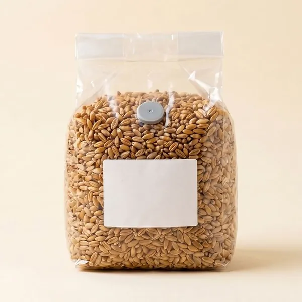
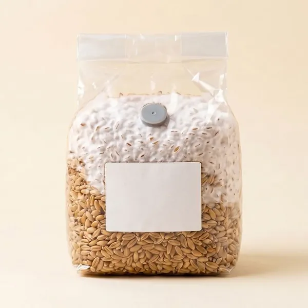
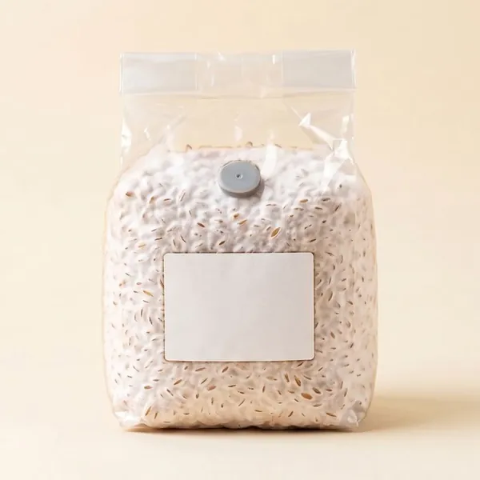

Today, on the Home screen
The next thing to do is at the top. Below it, what is growing and what is due today, including Friday's delivery and whether it's covered.
Cultures, batches, harvests and orders, on your phone. It works offline in the grow room and tells you what needs you today.
Free while in early access. No ads, no tracking.
Six screens from the app, with sample farm data. Every one of them is something we do on our own farm each week.
The next thing to do is at the top. Below it, what is growing and what is due today, including Friday's delivery and whether it's covered.

Jars and bags made from the same batch are grouped into one row you can open. A full shelf stays readable, and the search finds a code or a strain.

Log how far the mycelium has spread, and the picture follows in 5 percent steps. Health, next check and expected ready date sit on the same page.

What has to be inoculated, moved, checked or harvested, and on which day. Running plans keep each species on its own routine.

Print QR labels on a Phomemo Bluetooth printer, down to 30 by 20 mm, or export a PDF for any printer. Scan a label to open the item and act on it.

Orders and standing orders from your customers, against what is ready in the cold room. You see what is short before the day comes.
Spora is made by the people who run a small gourmet mushroom farm in Oslo. Lion's mane, king oyster and blue oyster go to restaurants every week, and this is the book we keep.
It keeps your records on the phone first and syncs when you are signed in. Export everything to Excel or a backup file at any time, and delete your account from inside the app.



Spora is being tested by a small group of growers before it opens on Google Play. It's free, and there's room for a few more.
Ask for an inviteSend a short email and you will hear from us the day Spora is on the App Store. Nothing else, and no list you have to leave.
Tell me when it's on iPhoneSomething missing, something broken, or a feature you need for your own farm? Write to hello@getspora.app. Every email gets a reply from the person who builds the app.